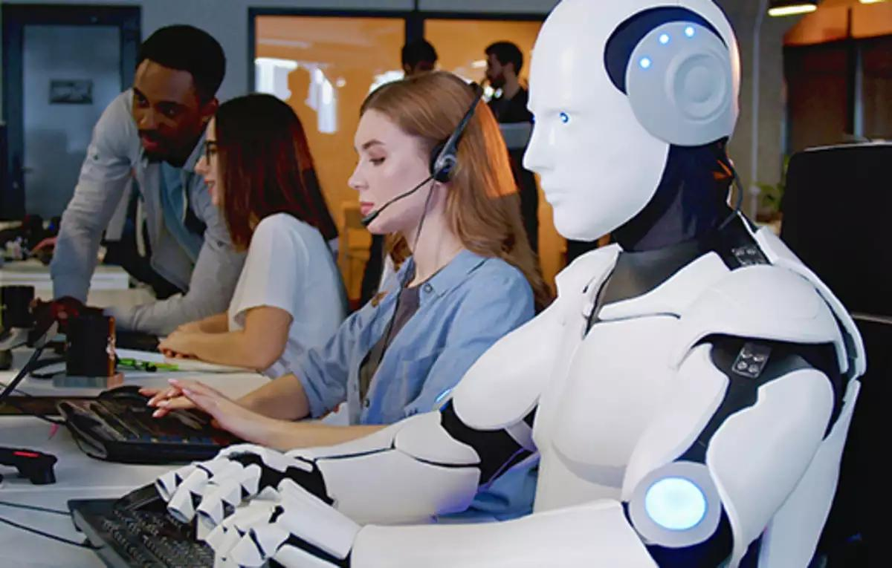

El punto ciego de ChatGPT: La ilusión de conocimiento en la era de
la inteligencia artificial generativa
El artículo analiza cómo la inteligencia artificial generativa,
aunque eficiente, carece de verdadero conocimiento. Se basa en datos
preexistentes sin juicio crítico ni imaginación, lo que puede llevar
a confundir información con conocimiento real. Advierte sobre los
riesgos sociales de asumir que la IA genera saber auténtico.
La IA en entrevistas laborales: ¿eficiencia o deshumanización?
La inteligencia artificial está comenzando a usarse en entrevistas
de trabajo, con sistemas automatizados que evalúan a los candidatos.
Sin embargo, algunos procesos fallan, generando experiencias
frustrantes y deshumanizadas, como en el caso de Leo Humphries,
quien descubrió que su entrevistador era una IA con problemas
técnicos. Expertos advierten que, aunque la IA puede reducir costos,
priorizarla sobre la experiencia humana puede perjudicar a los
postulantes.
IA vs. habilidades humanas: el desafío empresarial

La película Yo Robot plantea preguntas sobre si la inteligencia
artificial podrá superar al ser humano en áreas creativas y cuál
será su impacto laboral. Estudios muestran que los humanos tienen
dificultad para distinguir textos generados por IA, lo que expone
riesgos de desinformación. Además, la IA genera contenido sin
verdadera comprensión, lo que resalta la importancia de desarrollar
pensamiento crítico y habilidades de comprensión en las futuras
generaciones. La educación y el entrenamiento en comunicación serán
clave para que la IA sea una aliada y no una amenaza en el trabajo y
la sociedad.
Cuando las máquinas superaron a los humanos: los hitos de la
inteligencia artificial
La IA ha vencido a humanos en juegos complejos como ajedrez y Go,
demostrando su capacidad de adaptación. Más allá del
entretenimiento, ya impacta sectores como la medicina. Sin embargo,
plantea debates sobre límites éticos y sociales, y cómo conviviremos
con máquinas cada vez más inteligentes.
Programas como PaideIA buscan transformar la educación con IA, pero
el cambio real será estructural. La tecnología redefine el rol
docente como guía del aprendizaje. Se necesita una reforma profunda
en salarios, formación y evaluación para integrar la tecnología sin
perder la presencialidad.